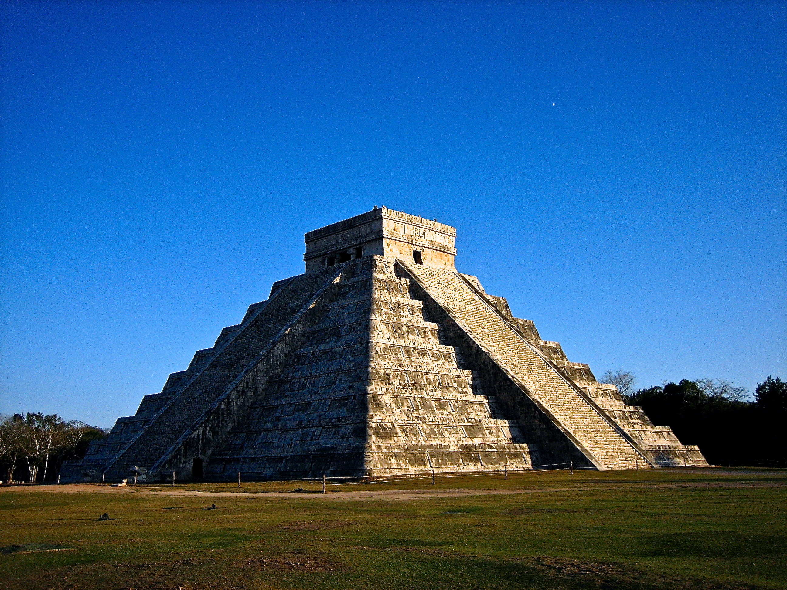

CHICHEN ITZA (MEXICO)
CHICHEN ITZA (MEXICO)

Chichén Itzá es una antigua ciudad maya localizada en la península de Yucatán, México, y una de las Nuevas Siete Maravillas del Mundo.
Declarada Patrimonio de la Humanidad por la UNESCO en 1988. Era un centro religioso, militar,
político y comercial en su apogeo, con una población de aproximadamente 35,000 personas.
La legendaria ciudad maya de Chichén Itzá, Patrimonio de la Humanidad declarada por la UNESCO desde 1988 y Maravilla del Mundo desde 2007,
sobresalió como centro cultural y político de la vieja civilización maya y fue uno de los asentamientos más extensos del centro-norte de la península de Yucatán.